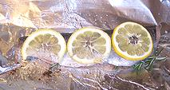

Fish Page
Oiling Foil
Prepping fish
Ready to wrap

Options
Wrap & seal
Ready to serve
Procedure
- Scale and clean the fish per method on our page Cleaning and Filleting Round Fish or Cleaning & Filleting Deep Bodied Fish, whichever is applicable. Pan dress the fish if you want it that way, otherwise leave it whole.
- Many fish need several diagonal slashes half way through the flesh on both sides to keep skin shrink from randomly tearing the fish and making it unattractive. The Red Snapper in the photos has skin with very modest shrink so it doesn't need slashes.
- Rub the fish with kosher salt and a little pepper, also rub a little on the inside of the body cavity. Brush both sides of the fish with Extra Virgin olive oil.
- At this point you have options. The Red Snapper shown has just a sprig of Rosemary placed in the body cavity. You can pour a tablespoon of white wine around the fish, or place several very thin slices of lemon over the top (as shown on a pan dressed trout), or you can stuff the cavity as was the baked mackerel at the top left of this page.
- Seal the package as tightly as you can to contain the steam as the fish cooks.
- Bake according to the table below
- Serving: You can serve the fish as baked (as was the stuffed mackerel at the top of this page, or you can dismantle the fish for serving. Our instruction Dismantling Cooked Fish continue with the Red Snapper used here.
Baking Time
Others have published times much shorter than mine - I tried theirs and got raw fish. A fish that's baked a few minutes over is still just fine, but an underdone fish is a disaster, particularly if you try to disassemble it for serving.
Most recommend "Cook until opaque and flakes easily" which can be difficult to determine without destroying the product. FDA guidelines are an internal temperature of 145°F/63°C for 15 seconds, or 165°F/74°C for stuffed fish (higher 'cause they have no idea what you've stuffed it with).
| For oven preheated to 425°F/220°C
Add up all lines that apply | Example ** | |
|---|---|---|
| First inch of thickness | 10 minutes | 10 |
| Each additional 1/2 inch | 5 minutes | 5 |
| Wrapped in foil | 10 minutes | 10 |
| On foil uncovered | 5 minutes | |
| In an uncovered dish | 10 minutes | |
| In a foil covered dish | 15 minutes | |
| Stuffed fish | 10 minutes | |
| Not thawed before cooking | 10 minutes | |
| TOTAL minutes | 25 | |
Hints
Know Your Fish:
Hints for many kinds of fish are on the "Details and Cooking" pages linked from our Varieties of Fish page (very large page). Some fish stay firm and manageable while others tend break up. Baking is more tolerant than other cooking methods, but you still want fish that stays together reasonably well.Dismantling:
If you intend to dismantle your fish into fillets before serving, selecting a fish that cooks firm is important. Even more important is that the fish be done all the way through to the backbone or you'll break it up trying to get the fillets loose.Done:
One test for doneness of a baked fish is to pull out the dorsal (top) fin. If it doesn't pull out smoothly and easily the fish isn't done.Oil:
You can use your best Ultra Virgin Olive Oil for this cooking method.Marinading:
If you marinade fish, let them soak up the marinade for about 20 minutes at room temperature or 1 hour in the refrigerator. Salt and acid in the marinade will retard spoilage but don't leave them out more than about 20 minutes. If you use leftover marinade for a sauce bring it to a high simmer for 5 minutes in a saucepan to make sure it's safe
Tools
Oven & Foil:
That's about all you need to bake fish.